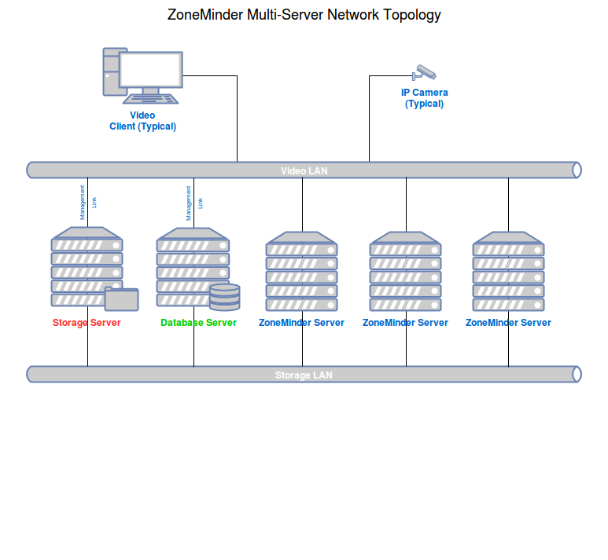

Multi-Server Install
It is possible to run multiple ZoneMinder servers and manage them from a single interface. To achieve this each zoneminder server is connected to a single shared database server and shares file storage for event data.
Topology Design Notes
Device symbols represent separate logical functions, not necessarily separate hardware. For example, the Database Server and a ZoneMinder Server, can reside on the same physical hardware.
Configure each ZoneMinder Server to use the same, remote Database Server (Green).
The Storage Server (Red) represents shared storage, accessible by all ZoneMinder Servers, mounted under each server’s events folder.
Create at least two networks for best performance. Dedicate a Storage LAN for communication with the Storage and Database Servers. Make use of multipath and jumbo frames if possible. Keep all other traffic off the Storage LAN! Dedicate the second LAN, called the Video LAN in the diagram, for all other traffic.
New installs
Follow the normal instructions for your distro for installing ZoneMinder onto all the ZoneMinder servers in the normal fashion. Only a single database will be needed either as standalone, or on one of the ZoneMinder Servers.
On each ZoneMinder server, edit zm.conf. Find the ZM_DB_HOST variable and set it to the name or ip address of your Database Server. Find the ZM_SERVER_HOST and enter a name for this ZoneMinder server. Use a name easily recognizable by you. This name is not used by ZoneMinder for dns or any other form of network connectivity.
Copy the file /usr/share/zoneminder/db/zm_create.sql from one of the ZoneMinder Servers to the machine targeted as the Database Server.
Install mysql/mariadb server onto the Database Server.
It is advised to run “mysql_secure_installation” to help secure the server.
Using the password for the root account set during the previous step, create the ZoneMinder database and configure a database account for ZoneMinder to use:
mysql -u root -p < zm_create.sql
mysql -uroot -p -e "grant all on zm.* to 'zmuser'@localhost identified by 'zmpass';"
mysqladmin -u root -p reload
The database account credentials, zmuser/zmpass, are arbitrary. Set them to anything that suits your environment. Note that these commands are just an example and might not be secure enough for your environment.
If you have chosen to change the ZoneMinder database account credentials to something other than zmuser/zmpass, you must now update zm.conf on each ZoneMinder Server. Change ZM_DB_USER and ZM_DB_PASS to the values you created in the previous step.
All ZoneMinders Servers must share a common events folder. This can be done in any manner supported by the underlying operating system. From the Storage Server, share/export a folder to be used for ZoneMinder events.
From each ZoneMinder Server, mount the shared events folder on the Storage Server to the events folder on the local ZoneMinder Server.
Open your browser and point it to the web console on any of the ZoneMinder Servers (they will all be the same). Open Options, click the Servers tab,and populate this screen with all of your ZoneMinder Servers. Each server has a field for its name and its hostname. The name is what you used for ZM_SERVER_HOST in step 2. The hostname is the network name or ip address ZoneMinder should use.
When creating a new Monitor, remember to select the server the camera will be assigned to from the Server drop down box.